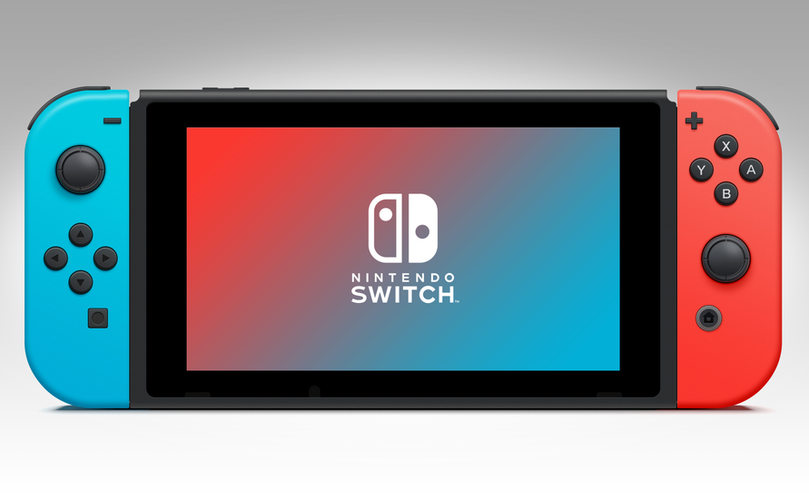
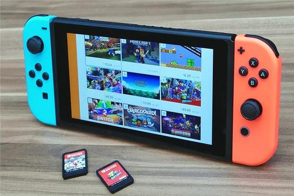

Nintendo Switch
任天堂Switch（Nintendo Switch），简称NS，是任天堂公司于2017年3月发布的主机，采用家用机、掌机一体化设计。
Nintendo Switch是任天堂前社长岩田聪最后一部参与开发的硬件产品。NS首秀获得强烈反响，预告片YouTube首日播放量超一千万回，一度登顶YouTube播放榜首，风头压过美国大选。
公开的NS游戏中，已超过160款游戏宣布支持中文。 Nintendo Switch于2019年1月29日起支持中文系统语言，包括简体中文与繁体中文
《时代》评2017十大数码产品NS力压iPhone X登顶。NS自2017年3月上市以来，仅用9个月就卖出超过1400万台，超过WiiU 1350万台的累积总销量。截止2020年12月31日Switch主机销量7987万台。软件销量（不含无实体版游戏）5.32亿。
2019年7月24日，腾讯正式代理引进Nintendo Switch。
历史沿革
2013年，前社长岩田聪、竹田玄洋（技术主管）和宫本茂（创意主管）制定了一套复兴任天堂商业的计划。 由于智能手机普及等因素导致竞争环境发生巨变，任天堂将调整开发体制 [20] 任天堂在2013年2月16日成立“统和开发总部”，以整合原家用游戏机开发部门的约130名员工和便携式游戏机开发部门的约150名员工。 此外，还将引入将家用游戏机和便携式游戏机连接起来进行游戏的机制。自2004年确立的开发体制以来，这是该公司时隔9年再次进行大规模的部门调整。
2015年03月17日，任天堂宣布将会推出代号NX的游戏专用机，详细计划2016年正式公布。2016年，《宝可梦：走！》的爆发、里约奥运会闭幕式的“东京八分钟”乃至马力欧跑酷苹果的商品发布会上的率先登台……任天堂在三个月时间里成功吸引到了足够多的眼球，越来越多的人们开始关注起NS。
2016年10月20日，该社发表了次世代主机“NINTENDO Switch（简称NS）”。 [24] 醒目的LOGO标记和Joy-Con手柄组装时的咔嗒、咔嗒声， [24] 效果足以超越任天堂硬件广告史上最为人称道的GBA-SP和Wii两次处女秀。 [24] 10月20日正值美国总统大选电视辩论，NS在各大社交网站话题度压倒特朗普名列首位。
 2016/12/8，在吉米·法伦主持的今夜秀电视节目里，吉米和美国任天堂总裁为玩家展示了《塞尔达传说：荒野之息》在NS上的实机操作。
2017年1月13日-15日间召开Nintendo Switch发布会。任天堂社长君岛达己，宣布 Nintendo Switch 在日本、美国、加拿大、欧洲各国、澳洲及中国香港的发售日为 3 月 3 日，售价 299美元、29980 日元 和 2340 港币 。机器不锁区。